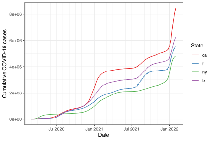

We’ll start by showing how to get data into epi_df, which is just a tibble with a bit of special structure, and is the format assumed by all of the functions in the epiprocess package. An epi_df object has (at least) the following columns:
geo_value: the geographic value associated with each row of measurements.
time_value: the time value associated with each row of measurements.
It can have any number of other columns which can serve as measured variables, which we also broadly refer to as signal variables. The documentation for gives more details about this data format.
A data frame or tibble that has geo_value and time_value columns can be converted into an epi_df object, using the function as_epi_df(). As an example, we’ll work with daily cumulative COVID-19 cases from four U.S. states: CA, FL, NY, and TX, over time span from mid 2020 to early 2022, and we’ll use the epidatr package to fetch this data from the COVIDcast API.
As we can see, a data frame returned by epidatr::covidcast() has the columns required for an epi_df object (along with many others). We can use as_epi_df(), with specification of some relevant metadata, to bring the data frame into epi_df format.
x <-as_epi_df(cases,geo_type ="state",time_type ="day",as_of =max(cases$issue)) %>%select(geo_value, time_value, total_cases = value)class(x)
#> [1] "epi_df" "tbl_df" "tbl" "data.frame"
summary(x)
#> An `epi_df` x, with metadata:
#> * geo_type = state
#> * time_type = day
#> * as_of = 2023-03-10
#> ----------
#> * min time value = 2020-03-01
#> * max time value = 2022-01-31
#> * average rows per time value = 4
head(x)
#> An `epi_df` object, 6 x 3 with metadata:
#> * geo_type = state
#> * time_type = day
#> * as_of = 2023-03-10
#>
#> # A tibble: 6 × 3
#> geo_value time_value total_cases
#> * <chr> <date> <dbl>
#> 1 ca 2020-03-01 19
#> 2 fl 2020-03-01 0
#> 3 ny 2020-03-01 0
#> 4 tx 2020-03-01 0
#> 5 ca 2020-03-02 23
#> 6 fl 2020-03-02 1
In general, an epi_df object has the following fields in its metadata:
geo_type: the type for the geo values.
time_type: the type for the time values.
as_of: the time value at which the given data were available.
Metadata for an epi_df object x can be accessed (and altered) via attributes(x)$metadata. The first two fields here, geo_type and time_type, are not currently used by any downstream functions in the epiprocess package, and serve only as useful bits of information to convey about the data set at hand. The last field here, as_of, is one of the most unique aspects of an epi_df object.
In brief, we can think of an epi_df object as a single snapshot of a data set that contains the most up-to-date values of some signals of interest, as of the time specified as_of. For example, if as_of is January 31, 2022, then the epi_df object has the most up-to-date version of the data available as of January 31, 2022. The epiprocess package also provides a companion data structure called epi_archive, which stores the full version history of a given data set. See the archive vignette for more.
If any of the geo_type, time_type, or as_of arguments are missing in a call to as_epi_df(), then this function will try to infer them from the passed object. Usually, geo_type and time_type can be inferred from the geo_value and time_value columns, respectively, but inferring the as_of field is not as easy. See the documentation for as_epi_df() more details.
x <-as_epi_df(cases) %>%select(geo_value, time_value, total_cases = value)attributes(x)$metadata
In the above examples, all the keys are added to objects prior to conversion to epi_df objects. But this can also be accomplished afterward. We’ll look at an included dataset and filter to a single state for simplicity.
ex3 <- jhu_csse_county_level_subset %>%filter(time_value >"2021-12-01", state_name =="Massachusetts") %>%slice_tail(n =6)attr(ex3, "metadata") # geo_type is county currently
Now we add state (MA) and pol as new columns to the data and as new keys to the metadata. The “state” geo_type anticipates lower-case abbreviations, so we’ll match that.
ex3 <- ex3 %>%as_tibble() %>%# drop the `epi_df` class before adding additional metadatamutate(state =rep(tolower("MA"), 6),pol =rep(c("blue", "swing", "swing"), each =2) ) %>%as_epi_df(additional_metadata =list(other_keys =c("state", "pol")))attr(ex3, "metadata")
Note that the two additional keys we added, state and pol, are specified as a character vector in the other_keys component of the additional_metadata list. They must be specified in this manner so that downstream actions on the epi_df, like model fitting and prediction, can recognize and use these keys.
2.3 Working with epi_df objects downstream
Data in epi_df format should be easy to work with downstream, since it is a very standard tabular data format; in the other vignettes, we’ll walk through some basic signal processing tasks using functions provided in the epiprocess package. Of course, we can also write custom code for other downstream uses, like plotting, which is pretty easy to do ggplot2.
ggplot(x, aes(x = time_value, y = total_cases, color = geo_value)) +geom_line() +scale_color_brewer(palette ="Set1") +scale_x_date(minor_breaks ="month", date_labels ="%b %Y") +labs(x ="Date", y ="Cumulative COVID-19 cases", color ="State")

Finally, we’ll examine some data from other packages just to show how we might get them into epi_df format. The first is data on daily new (not cumulative) SARS cases in Canada in 2003, from the outbreaks package. New cases are broken into a few categories by provenance.